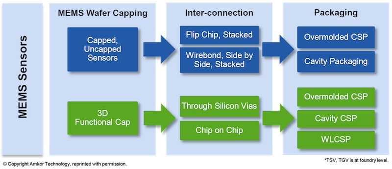
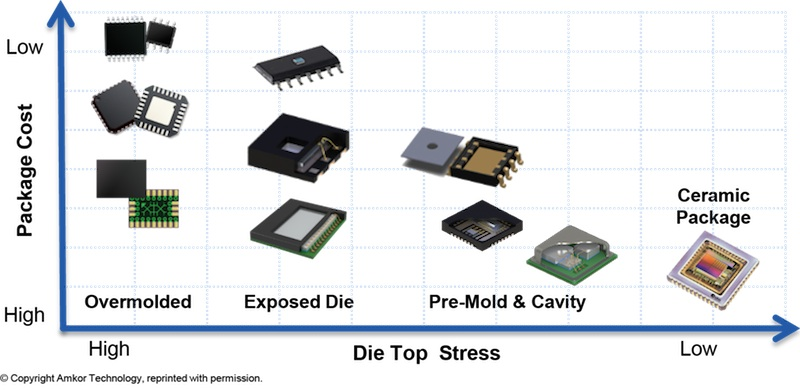

Tech Briefs
September 2015
Amkor’s Arcedera takes on MEMS packaging standardization
by Debra Vogler, Senior Technical Editor
Adrian Arcedera, VP, MEMS & Sensors at Amkor Technology
Adrian Arcedera, VP, MEMS & Sensors at Amkor Technology, was a presenter at the CHInano 2015 Conference & Expo - International Conference on Commercialization of Transducer & MEMS (10/28-10/30/15, Suzhou, China). He tackled the topic of MEMS packaging standardization (10/28/15) at the conference and responded to questions posed to him during an interview with Chip Scale Review.
The need for packaging standards for MEMS was made clear by Arcedera who told CSR that the advent of consumer products that need MEMS sensors for products such as the Nintendo® Wii and smartphones is a major driver. Consumer products are price-sensitive and this market needs quick turnaround times, smaller foot prints, and packages with a high degree of reusability and package standardization. This is a different set of circumstances than the MEMS industry faced when it was primarily concerned with automotive applications (e.g., pressure sensors for fuel efficiency and airbags), explained Arcedera. MEMS manufacturers of these devices were primarily catering to the automotive industry’s requirements that needed high reliability — MEMS were custom products that could be characterized as one MEMS device, one process, one package. This situation posed a challenge in transitioning from the automotive to the consumer market Arcedera told CSR. Furthermore, the automotive market was not price sensitive at that point, but long-term reliability was key. He added that the latest push is for sensor fusion and IoT applications, so there is an even greater need for lower costs and standardization (Figures 1 and 2).
Figure 1: : Adding IoT blocks to a MEMS/sensor package. SOURCE: Amkor Technology

Figure 2: : Sensor fusion trend. SOURCE: Amkor Technology
A major challenge facing MEMS manufacturers, said Arcedera, and one that affects packaging design, is being able to deliver the applicable stimulus (e.g., pressure, acceleration, etc.) from the outside world to the MEMS device itself without the packaging affecting the quality of that stimulus. “There isn’t a standard process for packaging MEMS devices,” Arcedera told CSR. “There is no roadmap, and it’s difficult to have one because you have different stimuli and different technologies for intake of the stimuli, measuring it, registering it, and so on.” As an example, he offered up the cases of a MEMS accelerometer, in which beams are moving up and down, or a pressure sensor that has a diaphragm moving up and down. “All of these are affected by packaging stresses. If your package is warped, then the amount of movement these MEMS devices are allowed is restricted, and once the stimuli reaches the MEMS structure, you still need to protect the MEMS device.”
Three of the most popular package styles today Arcedera told CSR, are SOIC, WFN, and laminate LGA/FPBGA, and they are all standardized packages. Amkor is now working on extending the QFN and laminate LGA/FPBGA packages so that they become standard platforms for sensor fusion and IoT applications and meet cost vs. performance objectives (Figures 3 and 4). Though sensor fusion and IoT applications are primarily aimed at the consumer market, Arcedera said that the packages also have the potential to transition to the automotive market, which will benefit by having these standard platforms.
Figure 3: : Extending standard platforms to sensor fusion and IoT packages. SOURCE: Amkor Technology

Figure 4: : Cost vs. performance comparison among standard package platforms and their extensions to sensor fusion and IoT. SOURCE: Amkor Technology
 The new Tech News section will be featuring select quotes, commentary, and data based on questions posed to industry technologists by our senior technical editor, Debra Vogler. If your company has significant technical news to announce and you’re invited to participate in these interviews, be prepared to discuss the science behind your latest breakthrough, the R&D challenges that had to be solved along the way, and the industry challenges driving the need for the technology. Send your technology news releases to editor@chipscalereview.com
The new Tech News section will be featuring select quotes, commentary, and data based on questions posed to industry technologists by our senior technical editor, Debra Vogler. If your company has significant technical news to announce and you’re invited to participate in these interviews, be prepared to discuss the science behind your latest breakthrough, the R&D challenges that had to be solved along the way, and the industry challenges driving the need for the technology. Send your technology news releases to editor@chipscalereview.com